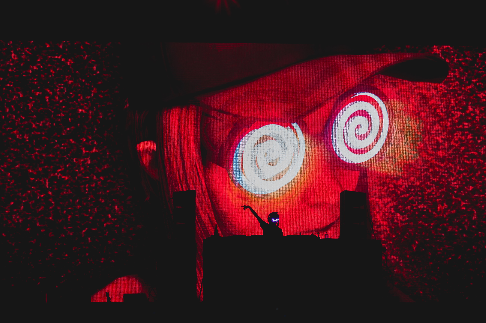
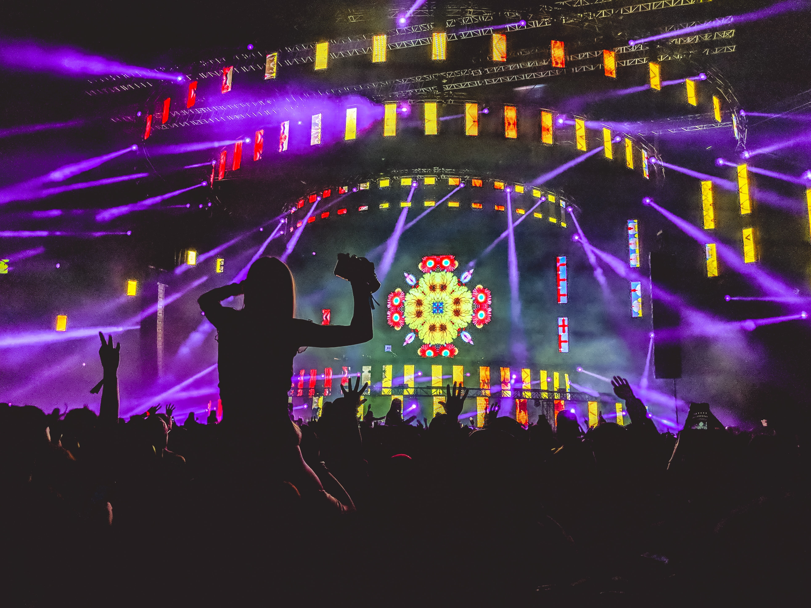

I have always been fascinated with visual arts and how they are so closely linked to the music scene. Here is an example of understanding how the brain interprets visual stimuli, and how that can add to the experience of live music.
This is a prime example of an artist who has optimized her branding to reflect her unique identity. This level of brand identity will become the new standard for artists.
Here you can really visualize the vibe, and this is yet another perfect showcase of how important it is to synergize visual and musical art mediums. The experienced energy felt gives an exciting and fun undertone.